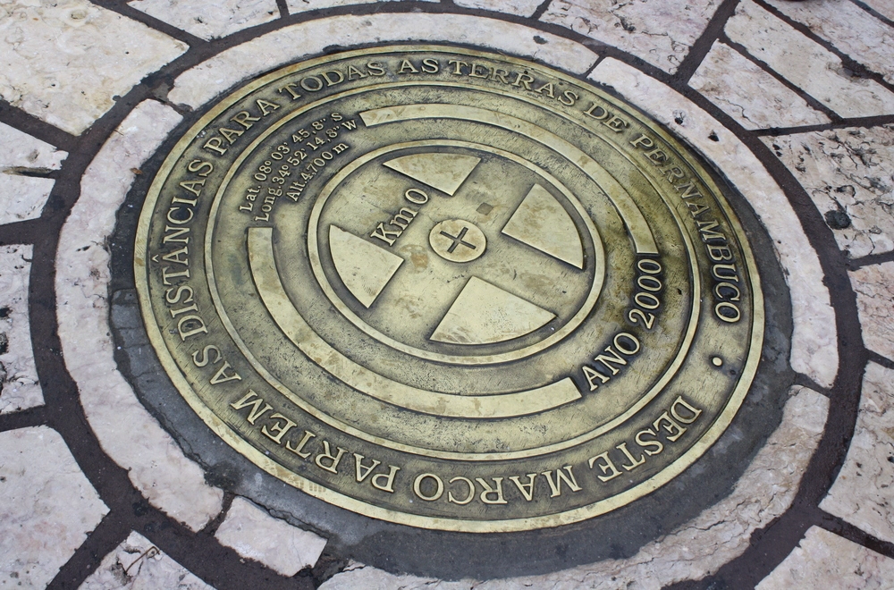
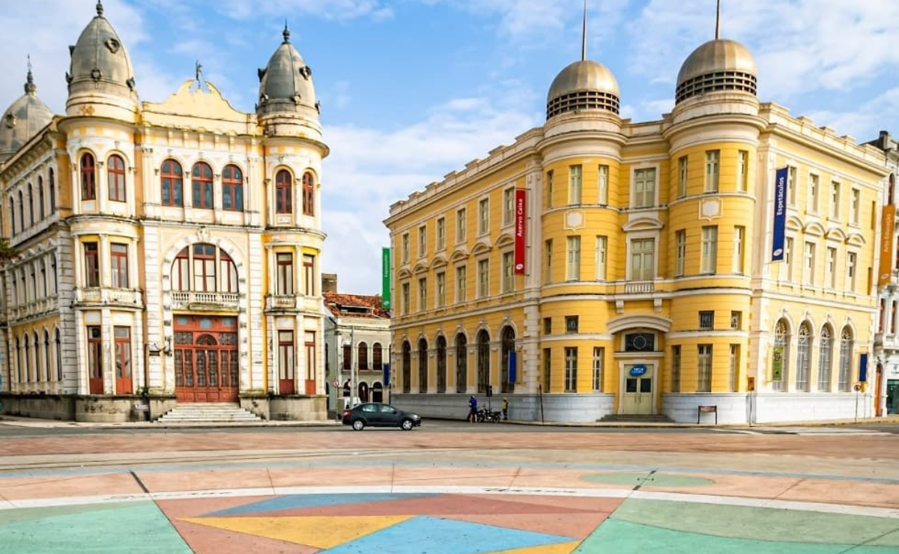
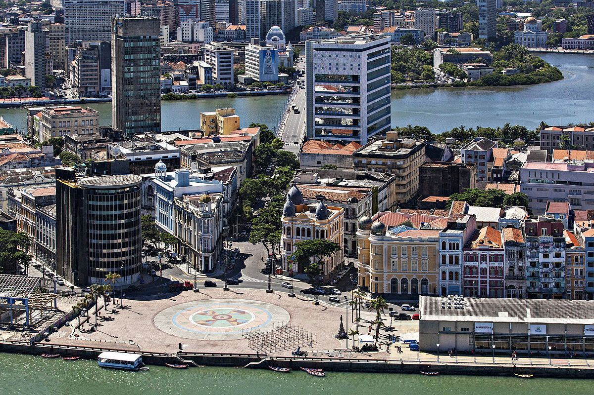
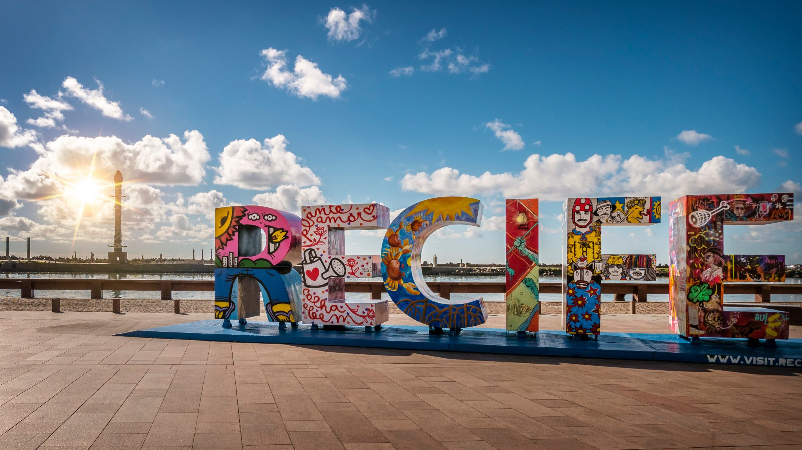

Marco Zero em Recife/PE
O Marco Zero é um ponto turístico importante da cidade de Recife, capital do estado de Pernambuco, no Brasil. Ele marca o ponto inicial da cidade, que se desenvolveu a partir desse local histórico.
Localizado na Praça Rio Branco, o Marco Zero é um espaço aberto e bem arborizado, com vista para o porto e para o Rio Capibaribe. No centro da praça, há um obelisco de 32 metros de altura, que foi erguido em 1938 para comemorar os 400 anos da fundação da cidade.
Além do obelisco, o Marco Zero também conta com uma grande rosa dos ventos em mosaico, que indica as principais direções geográficas e históricas de Recife. A praça é um ponto de encontro para turistas e moradores, com vário artigas de rua e vendedores de artesanato.
A partir do Marco Zero, é possível explorar os principais pontos turísticos de Recife, como o Centro Histórico, o Mercado de São José, o Bairro do Recife Antigo e o Parque das Esculturas de Francisco Brennand. Além disso, é possível fazer um passeio de catamarã pelo Rio Capibaribe, que passa pelo Marco Zero e por outros pontos turísticos da cidade.

|

|
 |
|  |  |  |